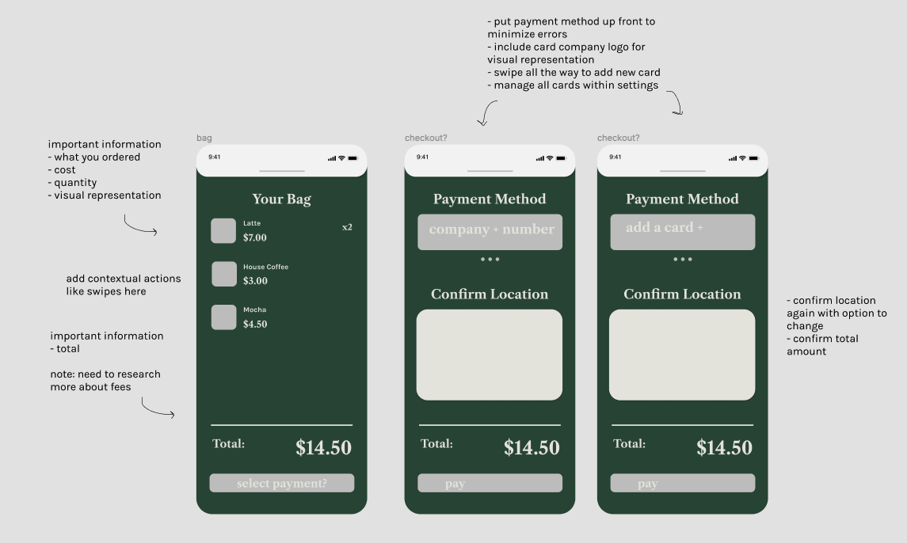
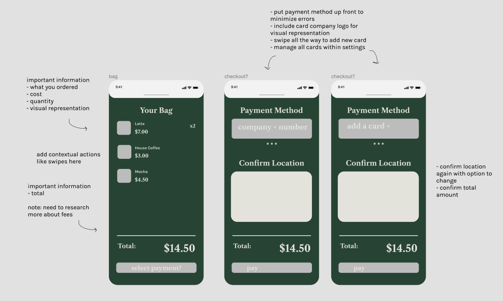

Since the COVID-19 pandemic, I've missed going to local cafes like TLJ. As a self-proclaimed cafe enthusiast, I decided to design a mobile app for Tous les Jours as a personal project.
Note: Any research was based on my experience there, conversations with old coworkers, or what I could find online. Product pictures are from the Tous les Jours website.
Without enough business, the bakery would be forced to close and fire its employees. Futhermore, TLJ would not be able to sell the bread or pasteries made that day. The conditions of the pandemic make it less feasible to donate food as well, which would contribute to food waste. However, adhering to physical distancing guidelines and protecting both employees and customer is important.
Main pain points for employees were lack of digital tip and food waste from unsold bread. During the pandemic the biggest issue was ensuring safety.

- Pre-Ordering - By allowing customers to order ahead of time, the amount of time a customer spends in the store is decreased, limiting contact for both customers and employees.
- Reflect Inventory - Some customers are looking to buy specific things. If out-of-stock items were reflected in the app, and a customer could see them, customers would not have to make an unnecessary trip just to find the thing they wanted was out-of-stock.
- Convenience - Increased convenience and safety could bring in more customers.
 



Compact, but easily navigable menu with pictures to parallels the experience of seeing the baked goods in-store.
The layout of the menus is staggered to make it easier for people to scan through using a rigid left-right downward motion.
Favorites page for regulars always order the same things.

Removed bottom dashboard so users are more focused on the UI for ordering.
Easy access to the cart by swiping up so users would not have to abandon this order, go back to home, and tap on the cart icon.
Option to choose iced/hot because in real life, often people would order without specifying hot/iced and we'd have to ask for clarification.
Present all crucial information on this confirmation such as what was ordered, prices, payment method used, and time until pickup.
A common complaint about mobile ordering apps is not being able to check on your order after you submit it.
To rememdy this, once you exited the order confirmation, there would be an animation showing you it has shrunk to the top of the home page.
- Contextual actions within the cart (adjusting quantity, deleting, favoriting?) — to improve ux
- Option to add a tip — meets another employee need
- Option to input how you would like your order to be packed — to improve ux
- Consider business side of this app for employees — considering all users
- An integrated rewards program experience — to improve ux